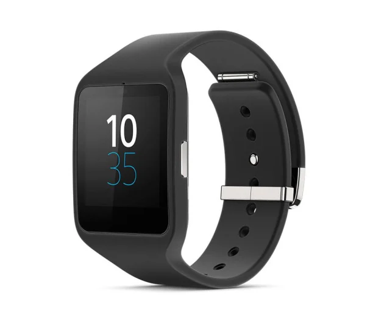

Sony Smartwatch 3

Sony Smartwatch 3 to inteligentny zegarek firmy Sony, wydany w listopadzie 2014 roku. Zegarek działa na systemie operacyjnym Android Wear i oferuje wiele funkcji, takich jak powiadomienia z telefonu, odtwarzanie muzyki i możliwość wykonywania połączeń telefonicznych, a także wysyłania wiadomości tekstowych. Sony Smartwatch 3 posiada wodoszczelność IP68, wbudowany GPS i akcelerometr, a także 4 GB pamięci wewnętrznej. Zegarek może działać w trybie offline, co oznacza, że użytkownik może korzystać z niektórych funkcji, takich jak odtwarzanie muzyki i śledzenie aktywności fizycznej, bez połączenia z telefonem. Smartwatch 3 obsługuje wiele aplikacji, które są dostępne w sklepie Google Play.
Powrót